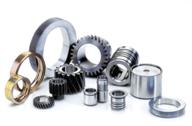
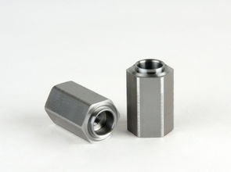

高精密零件加工、超精密零件加工是
深圳机械加工领域的厂家正在努力攻克的技术高地，不断专心改进加工工艺流程的各个环节，随着对技术无休止的探索，不断降低废品率，不少深圳机械加工厂家经过在数年的摸爬滚打中积累了优势，不仅建立了先进的5S、6S管理体系，还能在其加工车间进行参观考察，让客户能够亲身体验新技术的魅力。不少深圳机械加工厂目前已经达到国内领先水平。

深圳机械加工行业的前景，取决于市场需求。从目前市场反馈来看，航空航天、通讯、自动化、轨道交通、电子的非标精密零件加工需求旺盛，不少深圳机械加工厂尝到了甜头，纷纷加大投入，购买先进机加工设备、培养机械加工人才，抢占市场，机械加工类的产品是一门工艺技术驱动的生意，无论是设备加工工艺技术，还是人才技术创新，只要是质量好的产品，目前市场上就不乏客户支持。不少企业经过短短几年的发展，就已经成为了深圳机械加工领域的独角兽企业，年产值几个亿，甚至几十个亿。正是由于其在产品质量、先进的工艺技术、精益生产、服务上做得比较到位。深圳机械加工技术优势与产品的质量优势可以为深圳机械加工厂家品牌加持。

目前机械加工市场依然存在些许复杂混乱的情况，但是目前来说深圳机械加工由于是传统类型行业，很多圈外的客户手里有需求，在网上寻找一圈下来依然没有找寻到合适的供应商厂家，如果没有相关人员的推荐，很难找到高精密机械加工的优质供应商资源，另外一方面有的客户在拿着机械加工图纸在市场找供应商报价一圈下来，竟然出现报价高地不等，甚至出现差距翻几番的都有。
对于中小类型的机械加工厂家来说，面对目前来说，比较不错的市场，应该如何抓住市场机遇，才有机会脱颖而出抓住稍纵即逝的机遇呢？首先是承认与那些行业大佬的差距，认可其市场领导地位，站在切合自己实际的基础上制定和执行企业发展战略，找准适合自己企业发展的市场定位，人贵有自知之明，而不是做超越自己能力的事情，对于企业来说也是如此。只有这样，才有可能是正确的抉择，也才最有可能站稳脚跟。